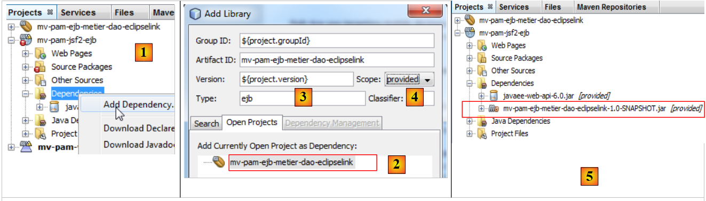

11. Version 6 - Integration of the web layer into a 3-tier JSF/EJB architecture
11.1. Application Architecture
The architecture of the previous web application was as follows:
 |
We replace the simulated [business] layer with the [business, DAO, JPA] layers implemented by EJBs in Section 7.1:
 |
11.2. The NetBeans project for the web layer
The NetBeans project for Web Version 2 is created by copying the previous project:
 |
- [1]: Copy the new project and paste it into the [Projects] tab,
- [2]: give it a name and set its folder,
- [3]: the project is created,
The new project has the same name as the old one. We change this:
 |
- [4]: Rename the project,
- [5]: Change its name as well as the artifactID.
We have few changes to make to adapt this web layer to its new environment: the simulated [business] layer must be replaced by the [business, DAO, JPA] layer of the server built in Section 7.1. To do this, we do two things:
- we remove the [exception, business, jpa] packages that were present in the previous project.
- To compensate for this removal, we add the EJB server project built in Section 7.1 to the web project’s dependencies.
 |
- In [1], we add a dependency to the project,
- in [2], we select the Maven project for the [business] layer. In [3], we specify its type, and in [4] its scope. The scope is set to `provided` to indicate that it will be supplied to the web module by its runtime environment. We will see shortly that it will be supplied by an enterprise application,
- in [5], the dependency has been added.
The [pom.xml] file is then as follows:
private boolean viewInfosIsRendered;
We can now remove the packages from the [business] layer that are no longer needed:
 |
We also need to modify the code in the [Form.java] bean:
<dependencies>
<dependency>
<groupId>${project.groupId}</groupId>
<artifactId>mv-pam-ejb-metier-dao-eclipselink</artifactId>
<version>${project.version}</version>
<scope>provided</scope>
<type>ejb</type>
</dependency>
<dependency>
<groupId>javax</groupId>
<artifactId>javaee-web-api</artifactId>
<version>6.0</version>
<scope>provided</scope>
</dependency>
</dependencies>
Line 7 instantiated the simulated [business] layer. Now it must reference the actual [business] layer. The previous code becomes the following:
public class Form {
public Form() {
}
// business layer
private IMetierLocal metier=new Metier();
// form fields
...
Line 7: The @EJB annotation instructs the servlet container—which will execute the web layer—to inject the EJB that implements the local interface IMetierLocal into the business field on line 8.
Why the local interface IMetierLocal rather than the IMetierRemote interface? Because the web layer and the EJB layer run in the same JVM:
 |
Classes in the servlet container can directly reference EJB classes in the EJB container.
That's it. Our web layer is ready. The transformation was simple because we had taken care to simulate the [business] layer using a class that conformed to the IMetierLocal interface implemented by the actual [business] layer.
11.3. The NetBeans project for the enterprise application
An enterprise application allows for the simultaneous deployment of an application’s [web] layer and EJB layer on an application server, in the servlet container and the EJB container, respectively.
We proceed as follows:
 |
- in [1], we create a new project
- in [2], select the [Maven] category
- in [3], select the [Enterprise Application] type
- in [4], we name the project
 |
- In [5], we select Java EE 6
- In [6], an enterprise project can include up to two types of modules:
- an EJB module
- a web module
When creating the enterprise project, you can request the creation of these two modules, which will be empty initially. An enterprise project is used solely for deploying the modules it contains. Beyond that, it is an empty shell. Here, we want to deploy:
- an existing web module [mv-pam-jsf2-alone]. Therefore, there is no need to create a new web module.
- an existing EJB module [mv-pam-ejb-metier-dao-eclipselink]. Here, too, there is no need to create a new one.
In [6], we create an enterprise project without modules. We will add its web and EJB modules later.
- In [7], two Maven projects have been created. The enterprise project is the one with the .ear suffix. The other project is a parent Maven project of the former. We will not be concerned with it.
We add the web module and the EJB module to the enterprise project:
 |
- In [1], add a new dependency,
- in [2], add the EJB project [mv-pam-ejb-metier-dao-eclipselink]. Note its EJB type,
- in [3], add the web project [mv-pam-jsf2-ejb]. Note its type is war.
The [pom.xml] file is then as follows:
public class Form {
public Form() {
}
// business layer
@EJB
private IMetierLocal metier;
// form fields
Before deploying the enterprise application [mv-pam-webapp-ear], ensure that the MySQL database [dbpam_eclipselink] exists and is populated. Once this is done, we can deploy the enterprise application [mv-pam-webapp-ear]:
 |
- in [1], the enterprise application is deployed
- in [2], the enterprise application [mv-pam-webapp-ear] has been successfully deployed.
In the browser, the following page appears:
 |
- in [1], the requested URL
- in [2], the list of employees has been populated with the entries from the [Employees] table in the dbpam database.
The reader is invited to repeat the tests from Web Version 1. Here is an example of the execution: